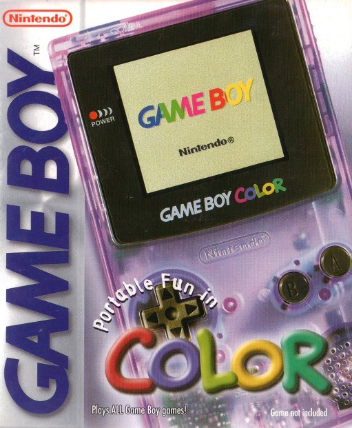

<
Una particularidad de esta consola es ser la primera compatible
con su antecesora, así que los antiguos juegos en cartucho de la
Game Boy clásica podían correr en esta nueva Game Boy e incluirles color. También, se mejoró su hardware, con mayor velocidad y resolución
en los gráficos, pero era inferior de todas formas a sus contemporáneas
como Neo Geo Pocket o WonderSwan,
como mucho, la mejora técnica podría equipararla con Game Gear.
La Game Boy Color tiene un catálogo de 230 juegos diferentes que
salieron desde 1998 a 2002.
>
